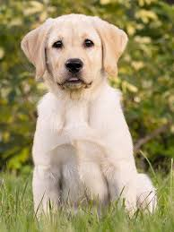

DOG

The domestic dog is a member of the genus Canis, which forms part of the wolf-like canids, and is the most widely abundant terrestrial carnivore.
CAT

The cat is a small carnivorous mammal. It is the only domesticated species in the family Felidae and often referred to as the domestic cat to distinguish it from wild members of the family.
MOUSE
A mouse, plural mice, is a small rodent characteristically having a pointed snout, small rounded ears, a body-length scaly tail, and a high breeding rate. The best known mouse species is the common house mouse. It is also a popular pet.
PARROT
Parrots, also known as psittacines, are birds of the roughly 393 species in 92 genera comprising the order Psittaciformes, found mostly in tropical and subtropical regions.
CAMEL
A camel is an even-toed ungulate in the genus Camelus that bears distinctive fatty deposits known as "humps" on its back. Camels have long been domesticated and, as livestock, they provide food and textiles
WOLF
The wolf, also known as the gray wolf or grey wolf, is a large canine native to Eurasia and North America. It is the largest extant member of Canidae, with males averaging 40 kg and females 37 kg.